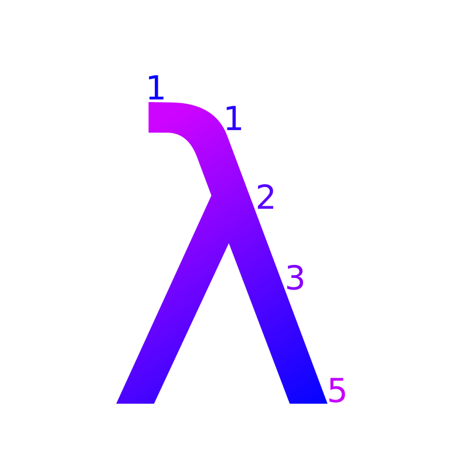

Home
Welcome

Welcome to my site! See the archives for old blog posts. I also have a list of papers I've authored/coauthered.
Posts
- Mathematics Behind Loan Repayment - August 8, 2019
- Implementing a Dependently Typed Language - May 21, 2017
- Church Encoding Haskell ADTs - June 17, 2016
- Poems - May 13, 2016
- Functions as Monads and Applicative Functors - March 27, 2016
- New Site - March 25, 2016